Homographies, Point Correspondences, Distance Feathering, and Autostitching Pipelines
Image mosaicing seamlessly stitches multiple overlapping photographs taken from a fixed center of projection into a unified, high-resolution panorama. Constructing a robust image mosaic requires precise projective coordinate transformations, non-linear pixel interpolation, and smooth spatial blending.
In this assignment, I implemented a complete end-to-end panoramic stitching pipeline across both manual and automated paradigms:
A 2D projectivity or homography maps points from one planar image surface to another via a $3 \times 3$ matrix $H$ with 8 degrees of freedom:
$$\begin{bmatrix} x' \\ y' \\ 1 \end{bmatrix} \sim \begin{bmatrix} h_{11} & h_{12} & h_{13} \\ h_{21} & h_{22} & h_{23} \\ h_{31} & h_{32} & h_{33} \end{bmatrix} \begin{bmatrix} x \\ y \\ 1 \end{bmatrix}$$
Setting $h_{33} = 1$, each point correspondence yields two linearly independent equations. With $N \ge 4$ pairs, the overdetermined system $A h = 0$ is solved via Singular Value Decomposition (SVD), where the optimal solution is the right-singular vector corresponding to the smallest singular value.
To prevent hole artifacts during transformation, destination pixels are inverse-mapped back to source coordinates using $H^{-1}$. Sub-pixel locations are interpolated across neighboring intensity values using 2D bilinear sampling:
$$I(x, y) = (1-a)(1-b)I_{0,0} + a(1-b)I_{1,0} + (1-a)bI_{0,1} + ab I_{1,1}$$
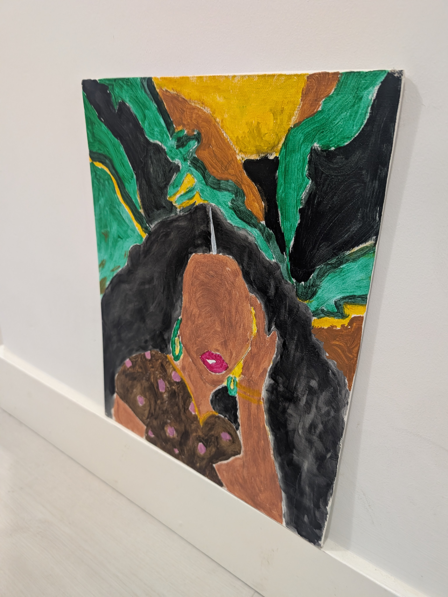
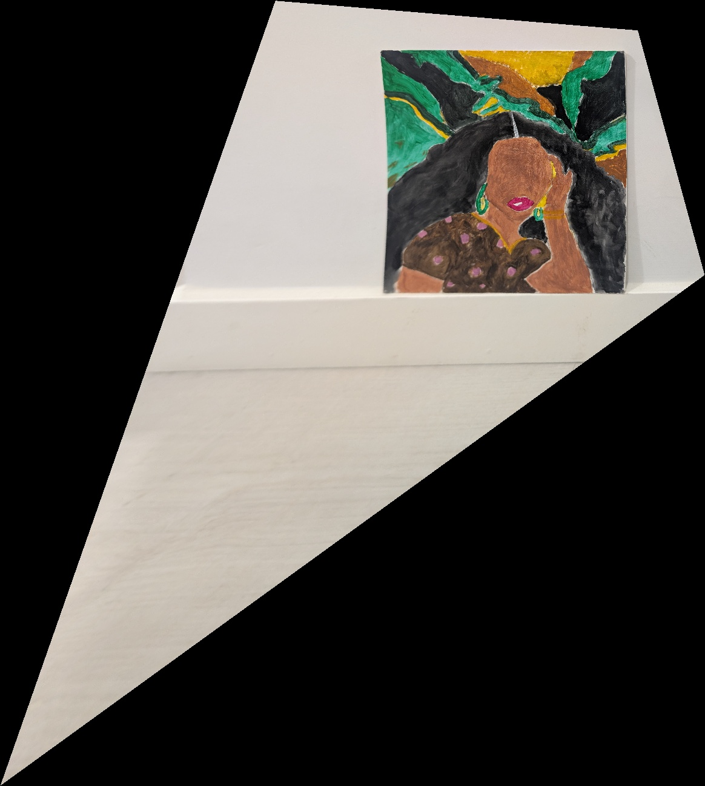
Constructing a manual mosaic requires defining accurate correspondence points across overlapping regions. To prevent UI lag and high-memory standard GUI freezes, manual points were captured on a stable $0.5\times$ downscaled canvas and re-scaled back to full high-resolution coordinates:
$$(x_{\text{full}}, y_{\text{full}}) = \frac{(x_{\text{clicked}}, y_{\text{clicked}})}{\text{WORK\_SCALE}}$$
Simple hard-cut pasting creates harsh seam lines and intensity mismatches. To produce an invisible seam, I implemented $L_2$ Euclidean Distance Transform weighting. Each image region accumulates pixel intensity proportional to its distance from the nearest boundary:
$$I_{\text{final}}(x,y) = \frac{\sum_{i} w_i(x,y) \cdot I_i(x,y)}{\sum_{i} w_i(x,y)}, \quad w_i(x,y) = \text{cv2.distanceTransform}(M_i)$$
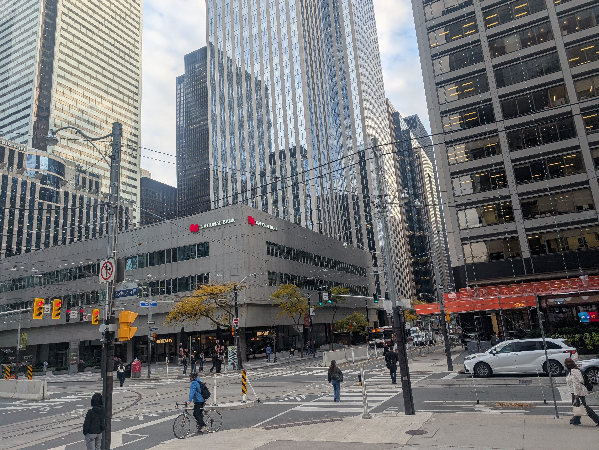
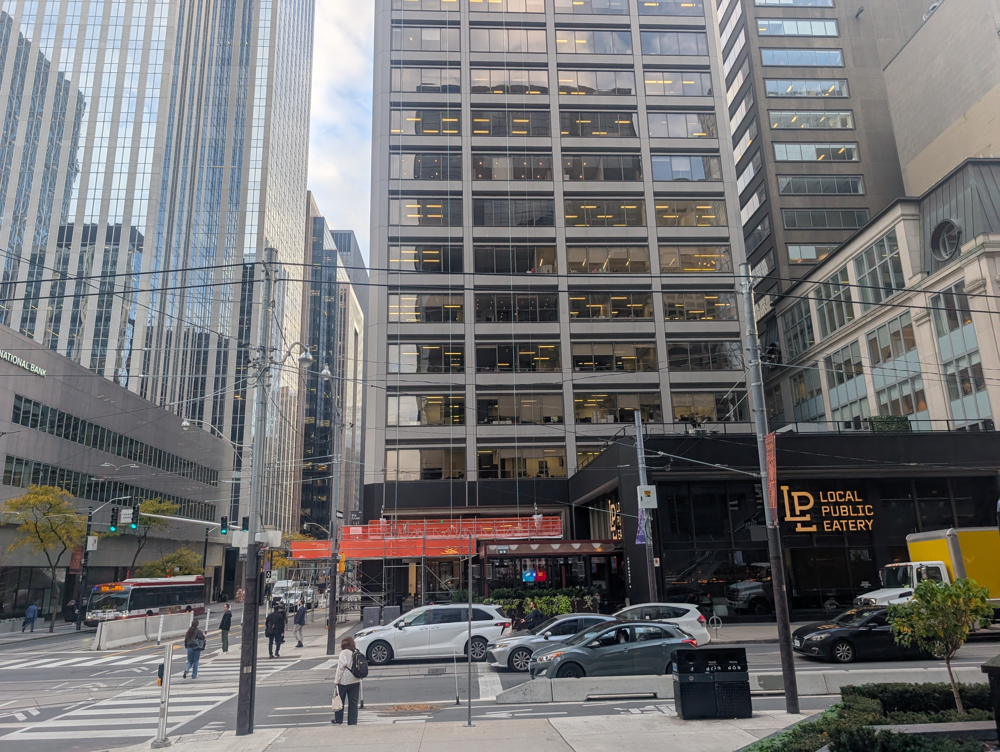
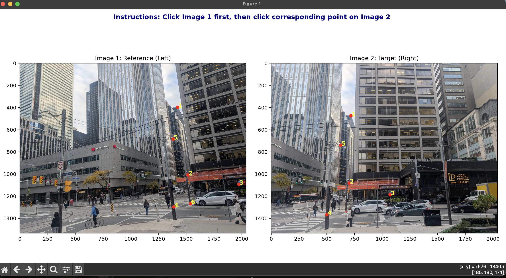
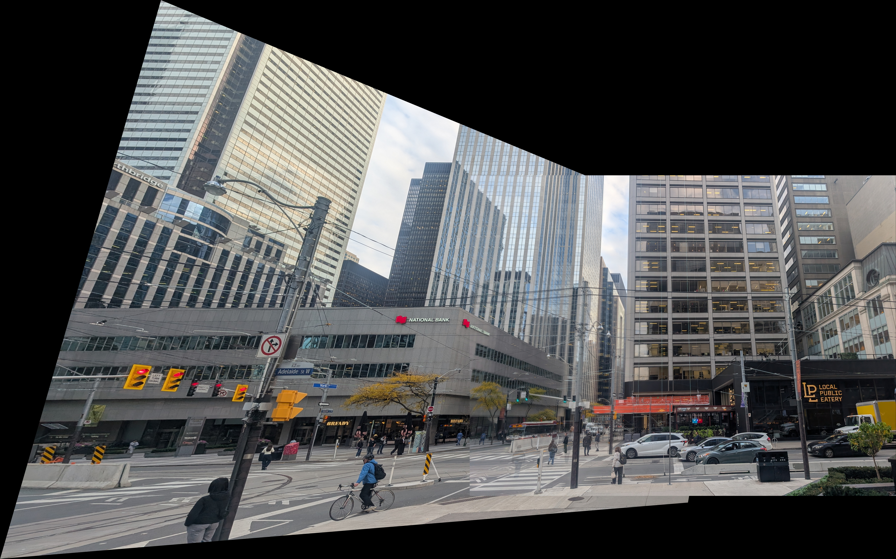
Manual point picking is labor-intensive and prone to human error. Part B automates point alignment through a multi-stage computer vision feature extraction pipeline based on Brown et al.
Harris corners detect local intensity variations in all directions. However, raw corners cluster heavily around dense textured zones. ANMS enforces spatial distribution by suppressing weaker corners within a minimum suppression radius $r_i$:
$$r_i = \min_j |x_i - x_j| \quad \text{s.t.} \quad f(x_i) < c_{\text{robust}} \cdot f(x_j)$$
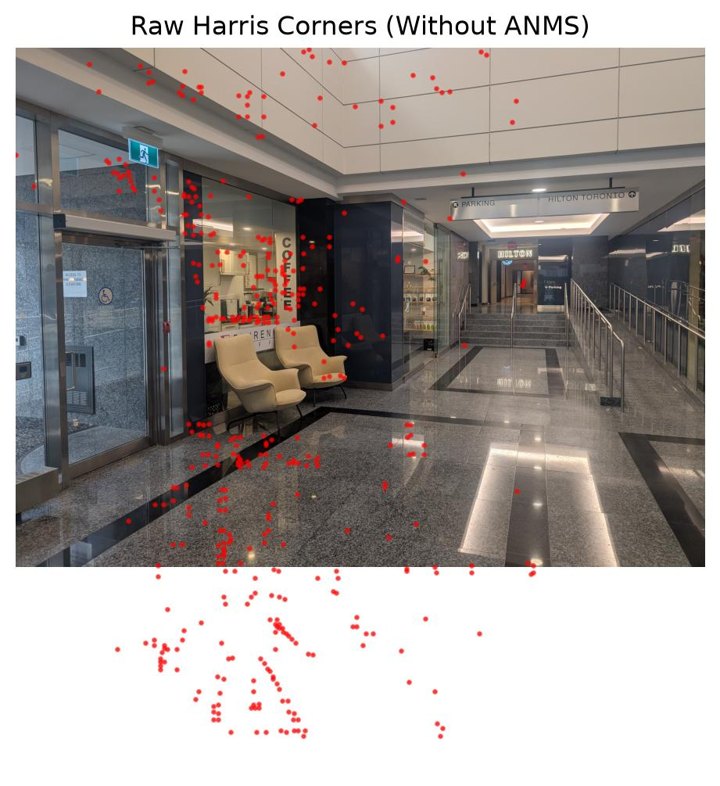
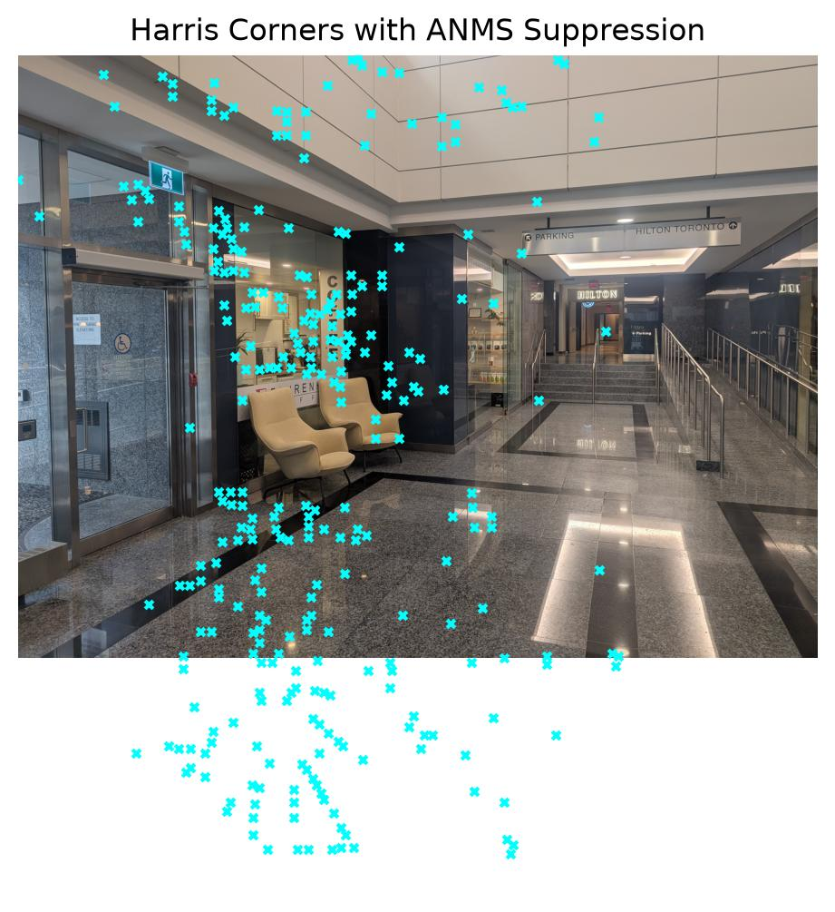
For each suppressed corner, a $40 \times 40$ window is extracted, blurred to prevent aliasing, and downsampled to an $8 \times 8$ descriptor vector. Descriptors are bias/gain normalized ($\mu = 0, \sigma = 1$). Matching utilizes Lowe's Ratio Test ($SSD_1 / SSD_2 < 0.7$) to discard ambiguous points.
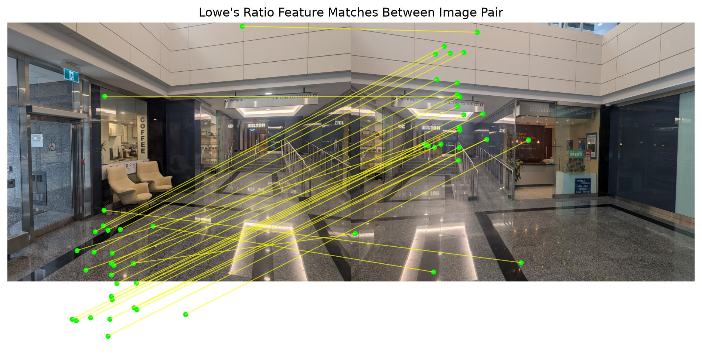
To eliminate false feature matches, 4 random correspondences are iteratively sampled ($N = 2000$ trials) to estimate candidate $H$ matrices. Correspondences meeting the inlier threshold $d(p', H p) < 3.0 \text{ pixels}$ are retained, and $H$ is re-computed over the full inlier set.
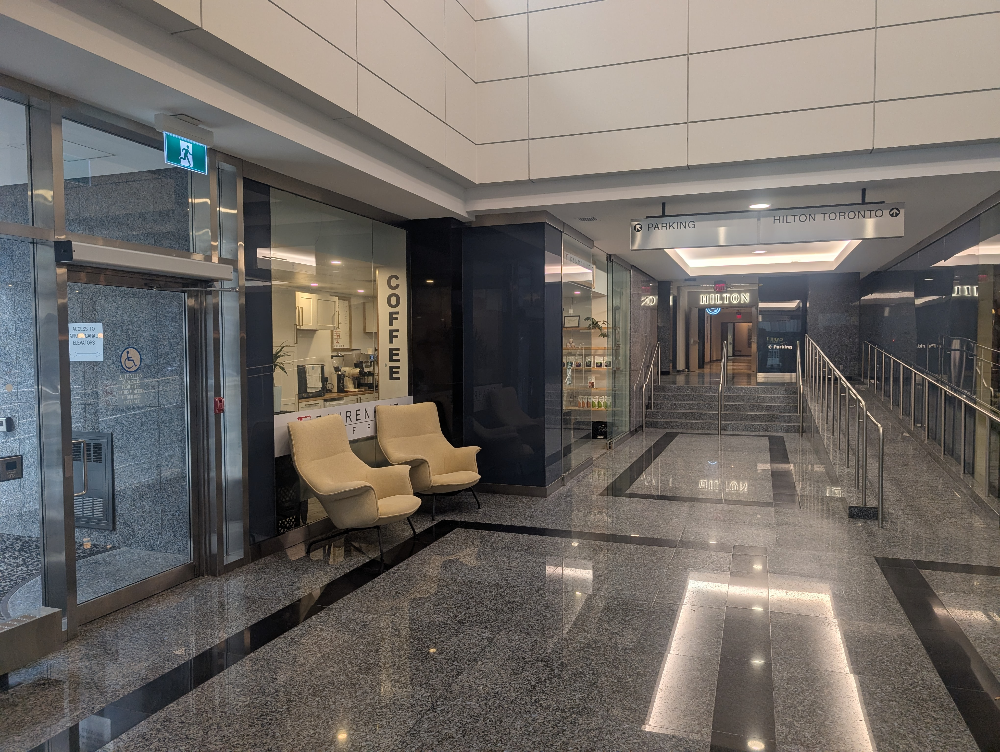
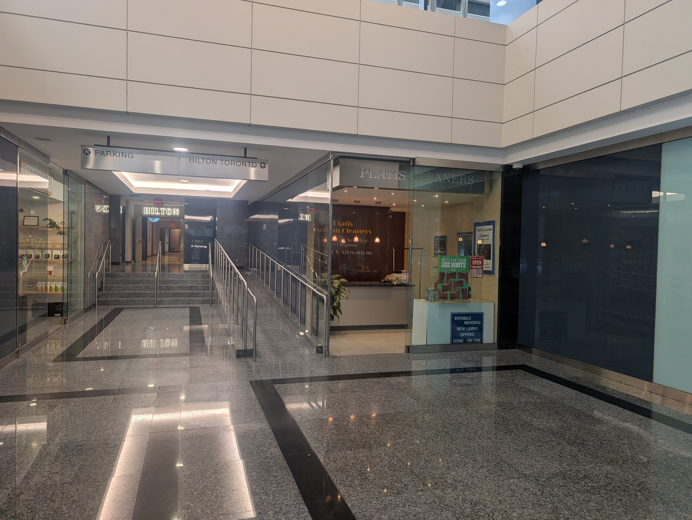
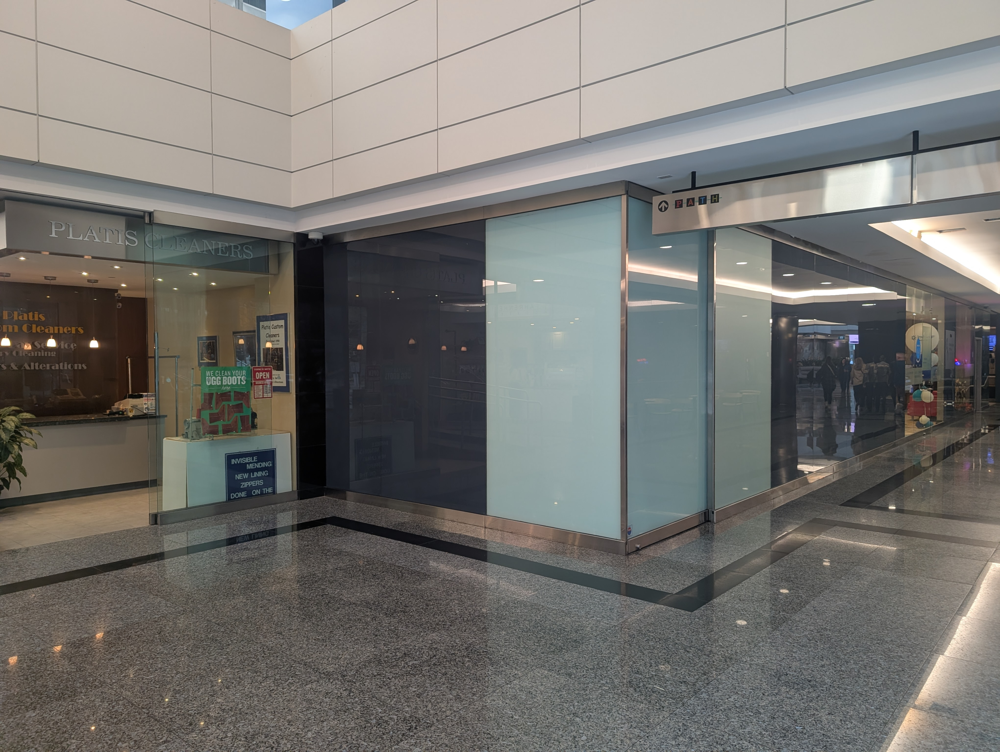
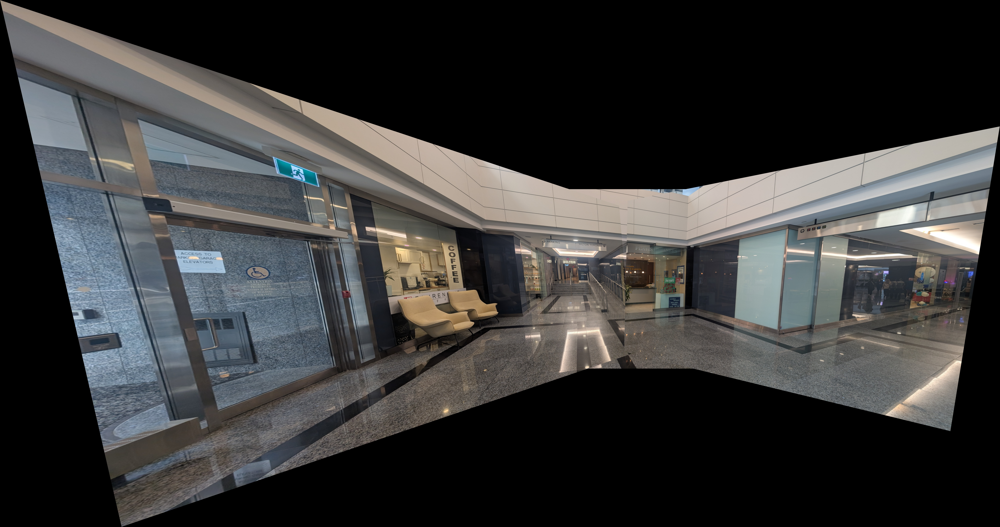
Key takeaways on projective geometry, numerical stability, and optimization pipelines.